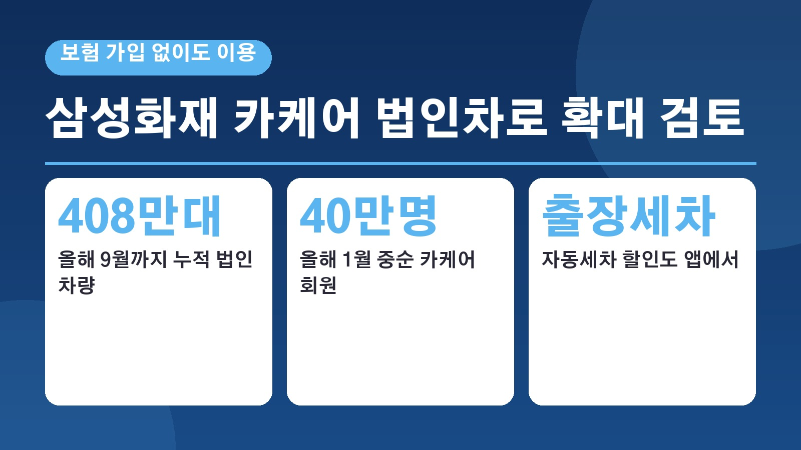
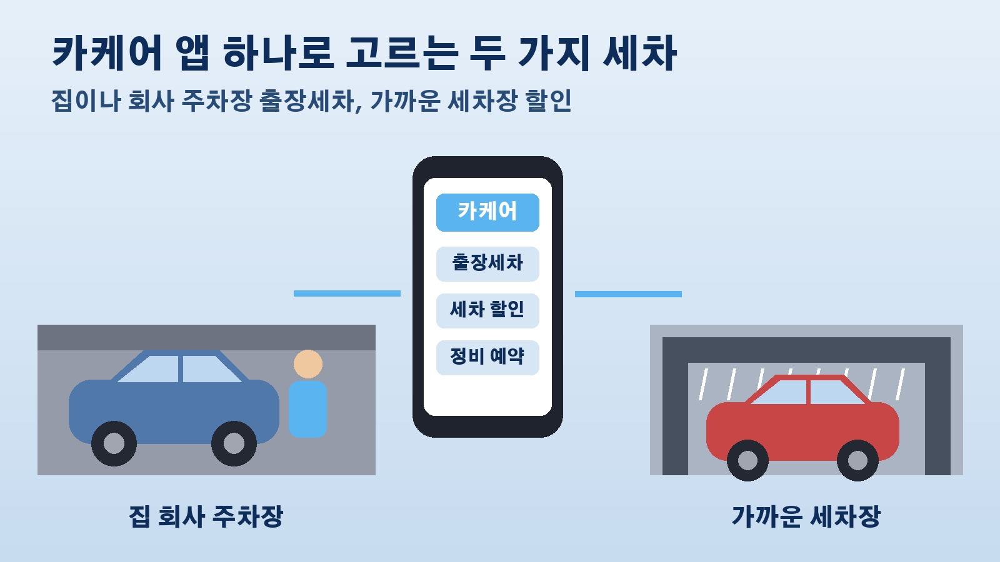

보험 안 들어도 세차 제휴를 쓰는 삼성화재 카케어, 법인차 408만대로 넓히려는 이유와 지금 쓸 수 있는 세차 혜택

출장세차를 부를지 가까운 자동세차장을 찾을지 고민하다가 보험사 앱에 세차 메뉴가 있다는 얘기를 들어 보신 적 있으신가요. 삼성화재의 차량 관리 서비스 카케어가 그런 경우인데요. 10월 21일 아주경제 보도에 따르면 삼성화재가 이 카케어를 개인 고객에서 법인 고객으로 넓히는 방안을 검토하고 있습니다. 카케어가 어떤 서비스인지, 세차와는 어떻게 연결되는지, 법인차로 넓히려는 배경은 무엇인지 정리해 볼게요.
삼성화재 카케어, 세차까지 묶은 차량 관리 앱
카케어는 자동차보험과는 별개로 차량 점검과 수리부터 주유, 주차, 세차까지 여러 차량 관리와 생활 혜택을 모아 둔 서비스입니다. 눈에 띄는 점은 이용 자격이에요. 일부 보험사는 자사 자동차보험 가입자에게만 이런 서비스를 열어 두지만, 삼성화재는 자동차보험 가입 여부와 관계없이 누구나 쓸 수 있게 했습니다. 다른 회사 보험에 들어 있는 분도 세차 같은 제휴 혜택을 이용할 수 있다는 뜻입니다.
출장세차와 자동세차 할인은 어떻게 연결되나
삼성화재 홈페이지의 카케어 세차 안내를 보면 카케어로 접속해 출장세차와 자동세차, 제휴 할인을 이용할 수 있다고 소개돼 있습니다. 집이나 회사 주차장에서 받는 세차 서비스와 가까운 세차장에서 받는 세차 할인, 이렇게 두 갈래예요. 다만 제휴 혜택은 제휴사가 제공하는 것이라 제휴사 사정에 따라 미리 알리지 않고 바뀌거나 중단될 수 있다는 단서가 붙어 있으니, 이용하기 전에 앱에서 지금 조건을 확인하는 것이 좋습니다.
오픈 1년 반 만에 회원 40만명
카케어는 2024년 7월 보험업계에서 처음으로 문을 연 서비스입니다. 보험신보에 따르면 오픈 1년째인 2025년 7월 회원 25만명을 넘었고, 2026년 1월 중순 기준으로는 40만명을 넘어섰습니다. 회사는 회원이 늘어난 배경으로 직원이 집이나 회사로 찾아가는 정기검사 대행 서비스와 예약부터 결제까지 앱 안에서 끝내는 방식을 꼽았습니다. 주유와 충전, 주차, 세차, 타이어, 렌트와 이동 같은 제휴 서비스도 단계적으로 늘려 왔다고 하고요.

법인차로 넓히려는 이유, 숫자로 보면
아주경제가 인용한 카이즈유 데이터연구소 자료를 보면 올해 9월까지 누적 법인 차량은 408만4739대입니다. 법인 승용차 신규 등록은 2024년 42만1611대에서 2025년 47만937대로 늘었습니다. 리스와 렌터카 등 기업이 차를 쓰는 방식이 다양해진 것도 배경으로 꼽혔습니다. 보험사 쪽 사정도 있습니다. 국내 5대 손해보험사의 누적 자동차보험 손해율이 80퍼센트를 웃돌 만큼 수익성 부담이 크고, 자동차보험은 해마다 갱신되다 보니 고객이 다른 회사로 옮기기 쉽습니다. 세차와 정비처럼 자주 쓰는 차량 관리 서비스로 고객과 만나는 횟수를 늘려 갱신 때 이탈을 줄이겠다는 계산입니다.
다른 보험사들은 어떻게 하고 있나
경쟁사들도 비슷한 방향으로 움직이고 있습니다. KB손해보험은 앱 하나로 차량 정보 조회와 정비 이력 관리, 제휴 할인까지 쓸 수 있는 KB카테크를 운영하고 있고, 현대해상은 월별 안전운전 점수에 따라 보험료를 추가로 깎아 주는 특약을 내놨습니다. 이번 법인 확대는 아직 검토 단계로 보도된 만큼 실제 시행 시기와 조건은 정해지는 대로 다시 확인해 보시면 됩니다. 회사차를 관리하는 담당자라면 세차와 정비 혜택이 법인 차량에도 열리는지 지켜볼 만합니다.
참고한 기사: 아주경제 삼성화재 차 서비스 법인차로 확대 검토 400만대 시장 정조준 2026년 10월 21일, 보험신보 삼성화재 카케어 서비스 질주 2026년 1월 26일, 삼성화재 홈페이지 카케어 세차 안내
태그
삼성화재카케어 카케어 출장세차 자동세차할인 세차할인 법인차관리 법인차량 차량관리앱 보험사세차 KB카테크